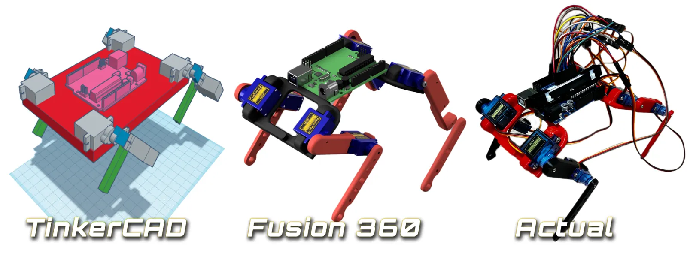
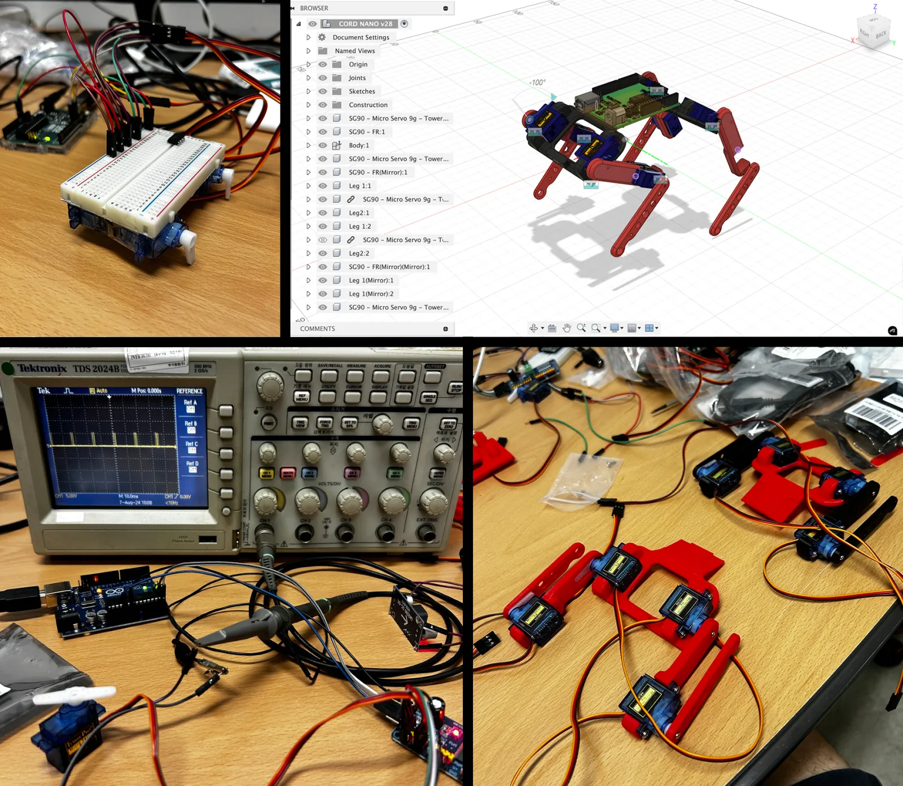

Overview
Project to enable starter roboticists to build a cheap, easy, simple quadruped robot.
(Check out CORD project on Github.)
Realizing the lack of inexpensive and user-friendly open-source, dog-style quadrupeds (there are many spider types ex. Kame), I decided to create CORD.
CORD is an open-source project that offers a starting point for those new to legged robotics or anyone seeking to build a dog robot, develop gait algorithms or contribute to a quadruped robot project. The robot's design and structure prioritize simplicity and cost-efficiency.


Build and testing
Components:
- 8x SG90 ($18.99)
- Breadboard ($2.99)
- Arduino Uno ($27.60)
- 3D printed parts
- Jumper Wires ($6.98)
- 12V DC Power Supply + Adapter ($7.89)
Total of: $64.45
Design & Assembly & Simulation: Robot components were designed and mechanism simulations were performed using Fusion360.
Wiring & Programming: Robot's joint movement and gait algorithms were implemented using Arduino IDE. Voltage, PWM, current verified using oscilloscope and multimeter.
Additional Testing: Tested, verified servo control with PCA9685, Arduino nano for future development.
Learning to walk
Newborn CORD learning to walk.
Calibration
Cord_initialize.ino's Cord_initialize() function tests CORD's initial angles and its standby angles for calibration.
Standing
Cord_stand.ino's Cord_stand() function reads CORD's initial angles and assigns each servo their standby angle.
Crawl gait
Cord_crawlGait.ino's crawl() function performs a 1 leg "crawl". Upon uploading the code, CORD will perform crawl gait (crawl leg 4,8 > 2,6 > 3,7 > 1,5) 3 times.
End of CORD v1.0
Live footage of CORD v1.0's end. An accidental reversed polarity power supply damaged the voltage regulator during the trot gait development process. Farewell, CORD v1.0.
See you soon
See you soon CORD.
Similar work

Laika
Laika is a quadruped robot like SPOT that is being built from scratch as part of Roboclub.

WYBot
Versatile robotic platform designed for multiple applications, featuring modular design and adaptive control systems.

E-Ducati-On
E-Ducati-On is an educational robotics platform designed to teach students about robotics, programming, and controls.